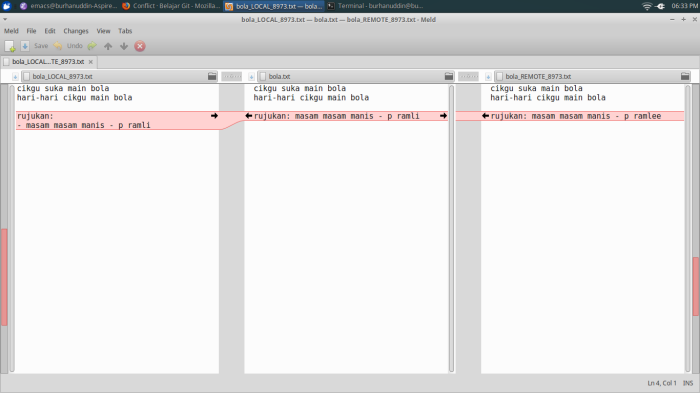

Conflict
Memang tidak dapat dielakkan, ada masa mungkin beberapa branch terpaksa edit line yang sama, dan ini akan mengakibatkan conflict. Jika ada conflict, branch tidak boleh merge.
Jika ada conflict, kita boleh pilih sama ada untuk menggunakan mergetool atau
selesaikan secara manual.
Untuk demo, kita akan membuat conflict dengan sengaja.
Kita buat branch untuk typo.
git checkout -b typo
Kemudian betulkan nama p ramli ke p ramlee dan commit dengan message
Betulkan ejaan.
git add bola.txt
git commit -m "Betulkan ejaan"
Checkout ke master kembali, kemudian buat branch untuk format.
git checkout master
git checkout -b format
Jika kita terus create branch sebelum tukar ke master, kita akan membuat branch daripada branch typo, tetapi kita mahu branch baru dari master.
Dalam branch format, tukar format rujukan seperti ini,
rujukan
- masam masam manis - p ramli
dan commit.
git add bola.txt
git commit -m "Tukar format"
Sekarang kita cuba merge kedua-dua branch tersebut.
git checkout master
git merge format
git merge typo
dan kita boleh lihat CONFLICT pada file bola.txt terpapar di console.
Buka file bola.txt dan kita dapat lihat file tersebut menjadi seperti berikut
cikgu suka main bola
hari-hari cikgu main bola
<<<<<<< HEAD
rujukan:
- masam masam manis - p ramli
=======
rujukan: masam masam manis - p ramlee
>>>>>>> typo
Line antara <<<<<<< HEAD dan ======= ialah yang asal, dan line antara
======= dan >>>>>>> typo ialah yang kita mahu ubah.
Kita boleh menyelesaikan conflict ini secara manual dengan memilih line yang baru kemudian tukar format menjadi,
rujukan:
- masam masam manis - p ramlee
Line-line yang lain seperti <<<<<<< HEAD dan >>>>>>> typo boleh dipadam.
Dalam situasi sebenar, kita mungkin perlu merujuk kepada programmer yang menulis code yang asal supaya code kita tidak mengganggu code mereka. Komunikasi itu penting semasa berkerja dalam kumpulan.
Setelah yakin conflict telah diselesaikan, commit seperti biasa.
git add bola.txt
git commit -m "Selesaikan conflict dengan menukar format rujukan dan membetulkan ejaan"
git mergetool
git mergetool ialah command untuk membuka software yang boleh membantu
menyelesaikan conflict. Jika ada conflict, anda boleh taip git mergetool.
Jika tidak pernah guna, sepatutnya command tersebut akan memaparkan senarai software yang boleh digunakan seperti ini:
This message is displayed because 'merge.tool' is not configured.
See 'git mergetool --tool-help' or 'git help config' for more details.
'git mergetool' will now attempt to use one of the following tools:
opendiff kdiff3 tkdiff xxdiff meld tortoisemerge gvimdiff diffuse diffmerge ecmerge p4merge araxis bc codecompare emerge vimdiff
Senarai software boleh dilihat di situ iaitu opendiff, kdiff3, tkdiff dan lain-lain.
Saya ada setup meld untuk mergetool, rupanya begini:

Tetapi saya tidak pandai guna. Kalau anda suka menggunakan GUI, anda boleh mencuba mana-mana software tersebut. Kawan sekerja saya dulu recommend p4merge.